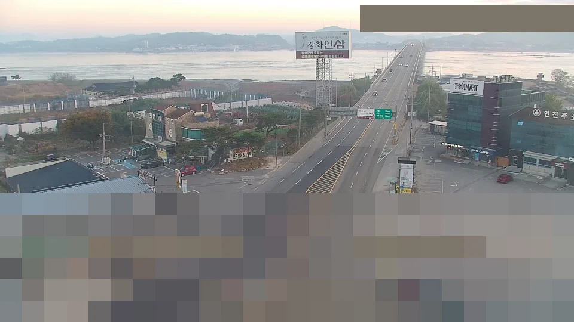

사진에서 농도까지 · 한눈에 보기
도로 CCTV 사진만으로초미세먼지를 읽는 AI
측정소가 없는 동네의 공기를, 이미 있는 CCTV로 알아냅니다.
인천 도로 CCTV 20대가 20분마다 보내는 사진으로 초미세먼지(PM2.5)를 추정해 지도에 그립니다.
이 프로젝트의 “미세먼지”는 넓은 뜻이고, 실제로 추정하는 것은 그중 초미세먼지(PM2.5)입니다.
무엇을 만들었나 — 30초 요약
위에서 아래로 한 줄씩 읽으면 됩니다. 점선 아래는 조금 더 자세한 설명이고, 자세히 ↓를 누르면 해당 설명으로 내려갑니다.
- 01 · 과제
산업체에서 과제를 받았습니다
협약 산업체 (주)이안에스아이티의 요청: “CCTV 사진으로 미세먼지를 읽고, 지도로 보여 주세요.”
요구 4가지 — 이미지 기반 PM2.5 추정, 공공 데이터 통합, 빈 곳을 채운 3D 지도, 실시간 시범 서비스
자세히 ↓ - 02 · 데이터
사진과 정답을 모았습니다
인천 도로 CCTV 20대를 20분마다 찍고, 가장 가까운 측정소의 실제 값을 정답으로 붙였습니다.
41일 22,573장. 정답 = 에어코리아 1시간 평균(0.4~4km). 시각이 안 맞으면 메우지 않고 버림. 날짜 단위로 학습 28일 / 시험 13일
자세히 ↓ - 03 · 모델
AI에게 먼 곳의 흐림을 가르쳤습니다
사진을 이미 많이 본 AI에게 우리 사진을 더 가르쳤습니다. 도로는 가리고 하늘과 먼 건물만 보게 했습니다.
공개 사진 모델 ConvNeXt V2-Tiny를 다시 학습 · 사진 위쪽 60%만 입력 · PM2.5를 로그로 바꿔 학습 · 습할수록 값을 조금 깎는 습도 보정 1개
자세히 ↓ - 04 · 개선
더 잘 맞히려고 하나씩 바꿔 봤습니다
볼 곳을 바꾸고, 베이징의 탁한 날 사진을 섞어 보고, 습도를 넣었다 뺐다 하며 후보를 겨뤘습니다.
베이스라인 4.56 → CNN 3.47 → 사진 위쪽 60% 3.37(연습시험) · 13일 시험 3.61 → 28일 재학습 3.19 → 학습률 2.99 → 습도 보정 2.91
자세히 ↓ - 05 · 결과
평균 2.91 차이로 맞혔습니다
처음 보는 13일 동안 사진 한 장당 평균 2.91㎍/㎥ 차이. 4km 떨어진 다른 측정소 값보다 정답에 가깝습니다.
MAE 2.91 · RMSE 3.85. 늘 평균만 부를 때 5.30, 4km 떨어진 측정소 값을 그대로 쓸 때 3.24
자세히 ↓
01 과제와 질문 — 무엇을 요청받았나
협약 산업체 (주)이안에스아이티가 낸 과제입니다. 요구사항 넷을 하나씩 만들었습니다.
초미세먼지(PM2.5) 측정소는 동네마다 있지 않습니다. 반면 도로 CCTV는 도시 곳곳에 있고, 지금도 영상을 보내고 있습니다. 이미 있는 CCTV 사진만으로 그 자리의 초미세먼지 농도를 읽어 낼 수 있을까요?
공기 중에 먼지가 많으면 빛이 먼지에 부딪혀 흩어집니다. 그래서 먼 건물과 산일수록 뿌옇고 흐리게 보입니다. 사진에서 먼 곳이 얼마나 흐린지를 보면 농도를 짐작할 수 있다는 것이 우리의 가설입니다.
출발점이 된 선행 연구는 한국건설기술연구원 사업(2022, (주)이안에스아이티 수행)입니다. CCTV 1대 옆에 센서를 직접 달아 학습했습니다. 우리는 이를 카메라 20대, 공공 측정소 정답, 실시간 서비스로 넓혔습니다. 두 연구의 비교는 06에 있습니다.
02 데이터 — 문제집과 정답지
- CCTV 237대인천 도로 CCTV
- 20대 선정하늘과 먼 건물이 보이는 곳
- 20분마다 1장해가 떠 있을 때만 · 9/21부터 계속 수집
- 거르기비(최근 60분), 습도 95%↑, 화각이 바뀌거나 깨진 화면
- 정답 붙이기가장 가까운 측정소 1시간 평균 + 기상청 1분 습도
사진을 섞지 않고 날짜로 나눴습니다. 같은 날 사진은 공기가 같아서, 섞으면 답을 보고 시험 치는 셈입니다. 시험 13일은 모델을 다 고른 뒤에만 채점했습니다.
- 시각이 안 맞으면 버립니다. 정답이나 날씨가 빈 시간은 앞뒤 값으로 메우지 않습니다. 비 온 시간을 맑은 값으로 메우면 반대로 가르치게 됩니다
- 정답은 1시간 평균입니다. 11:00·11:20·11:40 사진 세 장이 11시대 평균 하나를 정답으로 함께 씁니다
03 모델 — 어떻게 가르쳤나

위 60%만 · 글자 가림쉽게 말하면: 사진을 이미 잘 보는 AI를 데려와, 우리 CCTV 사진과 측정소 값을 보여 주며 “이렇게 흐리면 몇 ㎍/㎥”를 다시 배우게 했습니다. 습한 날은 물방울 때문에 먼지가 적어도 뿌옇게 보여서, 습도 숫자 하나를 같이 넣어 그만큼 덜어 내게 했습니다.
- 사진의 위쪽 60%만 봅니다. 아래쪽은 도로와 차라서, 먼지와 상관없이 매번 바뀝니다. 사람이 카메라마다 그린 상자(하늘, 먼 건물·산)와 사진 전체도 비교했는데, 아래 40%만 잘라 낸 쪽이 가장 잘 맞혔습니다(차이는 작습니다)
- 화면 위 시각·지명 글자는 모델이 보지 못하게 가립니다
| 바탕 모델 | 공개된 사진 인식 모델 ConvNeXt V2-Tiny. 사진 약 1,400만 장(ImageNet-22k)으로 미리 배운 모델을 가져와, 전체를 우리 사진으로 다시 조정했습니다(미세조정) |
|---|---|
| 입력 | 사진 위쪽 60%만(도로·차 제외). 화면 위 시각·지명 글자는 가립니다(글자로 시각을 읽어 맞히는 꼼수를 막으려고). 384×384 크기로 맞추고, 카메라 번호는 알려 주지 않습니다 |
| 맞히는 것 | PM2.5 숫자(회귀). 숫자를 로그로 바꿔 배워서 “몇 ㎍ 틀렸나”가 아니라 “몇 % 틀렸나”로 배웁니다. 낮은 값과 높은 값을 고르게 신경 씁니다 |
| 틀린 정도 재기 | 정답과의 차이를 그대로(절댓값) 평균 냅니다(L1 손실, 채점 기준인 평균 오차와 같음). 큰 오차를 제곱해 세게 벌주는 방식보다 가끔 튀는 정답에 덜 휘둘립니다 |
| 학습 방법 | 16장씩 묶어 학습 사진 전체를 12번 반복해 봅니다. 한 번에 고치는 폭(학습률)은 0.00003(3e-5)으로 작게 두어 미리 배운 눈을 망가뜨리지 않게 했고, 첫 바퀴는 그 폭을 천천히 올렸다가 이후 점점 줄입니다. 모델 안의 숫자가 너무 커지지 않게 매번 조금씩 줄여(weight decay) 사진을 외우는 것을 막습니다. RTX 3060 Ti로 약 2시간 |
| 문제 늘리기 | 같은 사진을 살짝 잘라 옮기거나 좌우로 뒤집어 다른 문제처럼 보여 줍니다(증강). 색·밝기를 바꾸는 것은 금지했습니다. 뿌연 정도 자체가 정답 신호라서입니다 |
| 고르기·채점 | 어떤 후보를, 몇 바퀴, 어떤 학습률로 쓸지는 학습 기간을 날짜 3묶음으로 나눠 돌아가며 본 연습시험으로 정했습니다. 시험 13일은 다 고른 뒤에 채점했고, “이겼다”는 시험 날짜를 무작위로 다시 뽑아 5,000번 채점해 95% 이상 앞설 때로 정했습니다 |
04 개선 과정 — 무엇을 바꿔 봤나
오차(㎍/㎥)는 작을수록 좋습니다. 두 시기의 시험이 달라서, 막대는 같은 시기 안에서만 비교해 주세요.
1차 개발 10/11~10/13 · 연습시험 오차 (학습 기간 안 교차검증)
2차 개선 11/3~11/6 · 새 시험 13일 오차 (10/20~11/1)
- 날 수보다 어떤 날을 배웠느냐같은 14일이라도 최근 날을 배운 모델(3.28)이 앞쪽 날을 배운 모델(3.61)보다 크게 나았고, 28일 모델(3.19)에 가까웠습니다
- 카메라별 모델은 동점카메라마다 따로 배운 모델 20개는 같은 28일로 배운 통합 모델과 차이가 없었습니다
- 습도는 습한 날 버릇을 고쳤습니다점수는 0.1 안쪽이지만, 아주 습한 날 높게 부르던 치우침이 +1.11 → +0.50으로 줄었습니다
05 결과 — 얼마나 맞혔나
- 처음 보는 13일 동안, 사진 한 장당 평균 2.91 ㎍/㎥ 차이로 맞혔습니다. 늘 평균만 부르면 5.30입니다
- 같은 시각에 4km 떨어진 다른 측정소의 실측값을 그대로 답으로 내도 3.24 차이가 납니다. CCTV 추정이 가까운 실제 측정기만큼, 또는 그보다 가깝게 맞힌 셈입니다
- 처음 모델은 습할수록 높게 불렀습니다(습도 85~95%에서 평균 +4.2). 뿌연 화면을 먼지로 착각한 것입니다
- 더 많은 날(28일)을 배우자 이 버릇이 크게 줄었고, 습도를 함께 넣자 가장 습한 구간에서 한 번 더 줄었습니다(+1.1 → +0.5)
- 탁한 날, 모델은 지평선과 먼 건물을 봅니다. 가설(먼 곳의 흐림)과 같은 곳입니다
- 맑은 날에는 시선이 흩어집니다. 이 그림은 사진마다 가장 많이 본 곳을 가장 밝게 맞추기 때문에, 단서가 약한 맑은 날은 여기저기 옅게 칠해집니다
06 선행 연구와 비교
CCTV 1대 (고양 일산)
인천 CCTV 20대
카메라 옆에 직접 단 센서 · 1분 값
공공 측정소(0.4~4km) · 1시간 평균
ResNet-152 분류
ConvNeXt V2-Tiny 회귀
6:2:2 (날짜 단위인지 적혀 있지 않음)
날짜 단위 · 처음 보는 13일
시작품 (한 지점)
20분마다 갱신되는 인천 전역 지도 서비스
선행 연구가 한 카메라 옆에 센서를 달아 가능성을 보였다면, 우리는 이미 있는 CCTV 여러 대와 공공 측정소만으로 같은 일을 하고, 도시 전체를 덮는 실시간 지도까지 이어 붙였습니다.
선행 연구: 한국건설기술연구원 「AI 영상인식 기반 3차원 미세먼지정보 통합시스템 시작품 제작」(2022) 결과보고서
07 한계와 다음
- 정답도 흔들립니다. 정답은 측정소 한 지점의 1시간 평균이고, 사진은 한 순간에 수 km 시선 전체를 봅니다. 서로 2.6~5km 떨어진 측정소끼리도 같은 시각 값이 평균 3.1 다릅니다
- 탁한 날을 낮게 부릅니다. 실측 25 이상인 날은 평균 5 넘게 낮게 불렀습니다. 배운 4주(9/22~10/19)에 탁한 날이 적어 충분히 배우지 못한 것으로 봅니다. 겨울 자료가 쌓이면 다시 확인할 계획입니다
- 밤, 비, 아주 습한 날(95% 이상)에는 추정하지 않습니다. 이때 지도는 측정소 실측으로 채웁니다
- 카메라마다 눈금이 다릅니다. 같은 농도도 카메라의 위치·방향·렌즈에 따라 다르게 보여, 새 카메라는 그 카메라의 사진을 배워야 합니다
- 지도의 값은 우리가 계산한 추정값이며 공식 측정값이 아닙니다